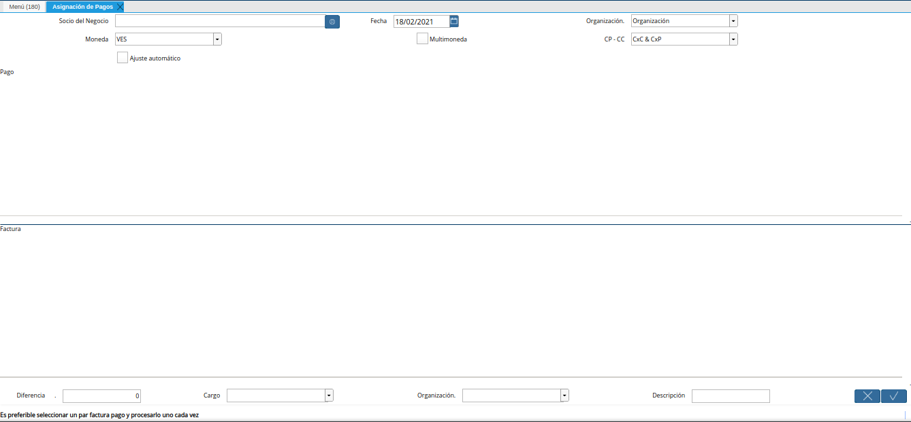
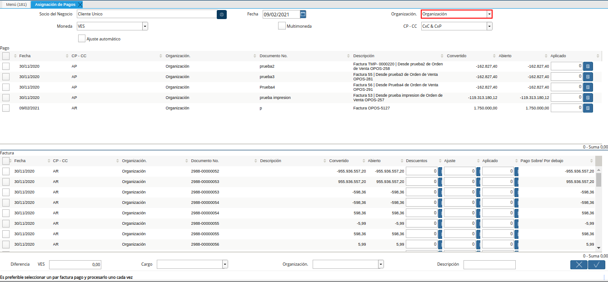
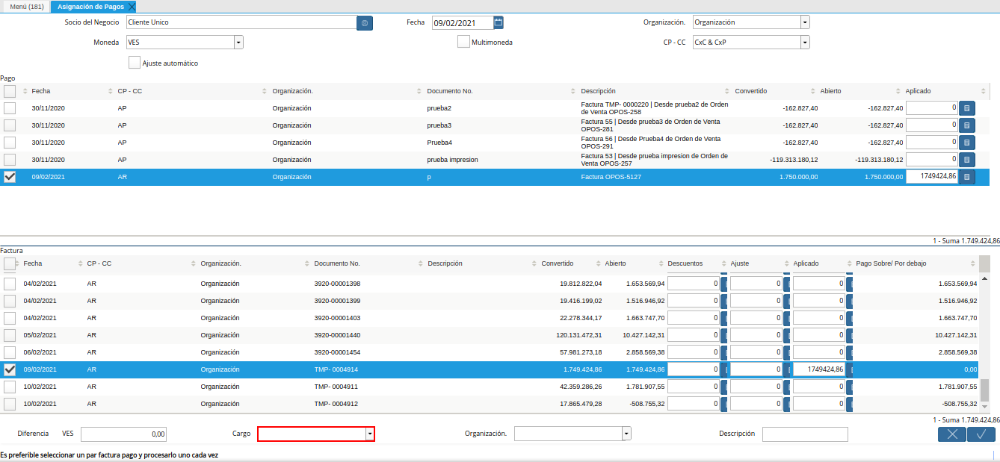

Asignación de Pagos/Cobros a Documentos por Pagar o Cobrar¶
Ubique y seleccione en el menú de ADempiere, la carpeta “Gestión de Saldos Pendientes”, luego seleccione la ventana “Asignación de Pagos”.
Imagen 1. Menú de ADempiere

Podrá visualizar la ventana del proceso “Asignación de Pagos”, con diferentes campos que permiten filtrar la información en base a lo requerido.

Imagen 2. Ventana ASignación de Pagos
Seleccione en el campo “Socio del Negocio”, el socio del negocio por el cual requiere filtrar la información.
Imagen 3. Campo Socio del Negocio

Seleccione en el campo “Fecha”, la fecha de la asignación.
Imagen 4. Campo Fecha

Seleccione en el campo “Organización”, la organización de la asignación.

Imagen 5. Campo Organización
Seleccione en el campo “Moneda”, la moneda de la asignación.
Imagen 6. Campo Moneda

Seleccione el check “Multimoneda”, para generar la asignación en multimoneda.
Este check permite asignar cobros de diferentes monedas a la factura.
Imagen 7. Check Multimoneda

Seleccione en el campo “CP - CC”, el tipo de cuenta por la cual requiere filtrar la información.
Imagen 8. Campo CP - CC

Podrá visualizar en el panel “Pago”, el resultado de todos los “Pagos/Cobros” con coincidencia por la búsqueda.
Imagen 9. Panel Pago

Podrá visualizar en el panel “Factura”, el resultado de todas las facturas con coincidencia por la búsqueda.
Imagen 10. Panel Factura

Seleccione los registros de pago/cobro y factura que requiere asociar. Dicha selección se debe realizar considerando lo siguiente.
Cuando el monto total del pago/cobro es mayor al monto total de la factura se debe seleccionar primero el registro de la factura.
Cuando el monto total del pago/cobro es menor al monto total de la factura se debe seleccionar primero el registro del pago/cobro.
Imagen 11. Selección de registros para cruce de cuentas

Debe seleccionar el registro de pago/cobro que requiere asociar. Debe seleccionar la factura a la cual requiere asociar los pagos/cobros
Si requiere asociar más de un registro a la factura, debe seleccionar todos los registros que requiera asociar la factura.
En el campo “Diferencia”, será visualizado el monto de diferencia resultante del cruce entre la factura y los pagos/cobros.
Imagen 12. Campo Diferencia

En el campo “Cargo”, podrá visualizar los diferentes cargos disponibles que pueden ser utilizados para justificar el proceso que se encuentra realizando.

Imagen 13. Campo Cargo
En el campo “Organización”, la organización para la cual se encuentra realizando el proceso.
Imagen 14. Campo Organización

En el campo “Descripción”, puede agregar una breve descripción referente al proceso que se encuentra realizando.
Imagen 15. Campo Descripción

Seleccione la opción “OK”, para ejecutar el proceso.
Imagen 16. Opción OK